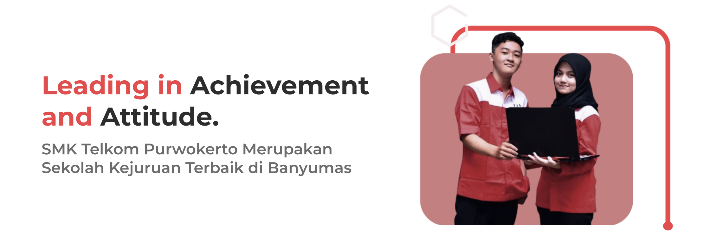

VISI:
SMK Telkom Purwokerto menghasilkan lulusan yang profesional di bidang Telematika, unggul di dunia kerja, mempunyai etos kerja tinggi, berbudi pekerti luhur, serta mampu berkompetisi dalam era global sampai dengan tahun 2020. MISI:
1. Menyelenggarakan proses belajar yang sesuai dengan budaya lokal dan nasional. 2. Menyelenggarakan pendidikan dan latihan yang berwawasan mutu untuk mampu berkompetisi.
3. Mengembangkan sistem pendidikan dan pelatihan yang adaptif, fleksible dan berwawasan global.
SMK Telkom Purwokerto menghasilkan lulusan yang profesional di bidang Telematika, unggul di dunia kerja, mempunyai etos kerja tinggi, berbudi pekerti luhur, serta mampu berkompetisi dalam era global sampai dengan tahun 2020. MISI:
1. Menyelenggarakan proses belajar yang sesuai dengan budaya lokal dan nasional. 2. Menyelenggarakan pendidikan dan latihan yang berwawasan mutu untuk mampu berkompetisi.
3. Mengembangkan sistem pendidikan dan pelatihan yang adaptif, fleksible dan berwawasan global.